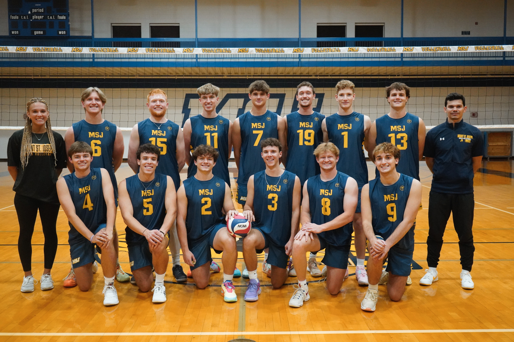

Welcome to MSJ Men's Volleyball
The Mount St. Joseph University men's volleyball team competes at the NCAA Division III level and represents the MSJ Lions with pride. The program emphasizes teamwork, discipline, and competitive excellence both on and off the court.
Program Highlights
- Teamwork and leadership
- Competitive collegiate athletics
- Student-athlete development
The MSJ men's volleyball program continues to grow as a competitive team within collegiate athletics. The Lions focus on developing strong team chemistry, improving individual skills, and competing at a high level throughout the season.
Team Photo
